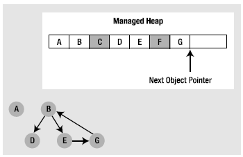
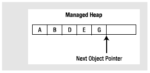

Now, back to the topic of how the garbage collector determines when an object is no longer needed. To understand the details, you need to be aware of the notion of application roots. Simply put, a root is a storage location containing a reference to an object on the managed heap. Strictly speaking, a root can fall into any of the following categories:
During a garbage collection process, the runtime will investigate objects on the managed heap to determine whether they are still reachable (i.e., rooted) by the application. To do so, the CLR will build an object graph, which represents each reachable object on the heap. Object graphs are explained in some detail during the discussion of object serialization in Chapter 20. For now, just understand that object graphs are used to document all reachable objects. As well, be aware that the garbage collector will never graph the same object twice, thus avoiding the nasty circular reference count found in COM programming.
Assume the managed heap contains a set of objects named A, B, C, D, E, F, and G. During a garbage collection, these objects (as well as any internal object references they may contain) are examined for active roots. Once the graph has been constructed, unreachable objects (which we will assume are objects C and F) are marked as garbage. Figure 8-3 diagrams a possible object graph for the scenario just described (you can read the directional arrows using the phrase depends on or requires, for example, E depends on G and B, A depends on nothing, and so on).
Figure 8-3. Object graphs are constructed to determine which objects are reachable by application roots
Once an object has been marked for termination (C and F in this case—as they are not accounted for in the object graph), they are swept from memory. At this point, the remaining space on the heap is compacted, which in turn causes the CLR to modify the set of active application roots (and the underlying pointers) to refer to the correct memory location (this is done automatically and transparently). Last but not least, the next object pointer is readjusted to point to the next available slot. Figure 8-4 illustrates the resulting readjustment.
Figure 8-4. A clean and compacted heap
Strictly speaking, the garbage collector makes use of two distinct heaps, one of which is specifically used to store very large objects. This heap is less frequently consulted during the collection cycle, given possible performance penalties involved with relocating large objects. Regardless, it is safe to consider the managed heap as a single region of memory.